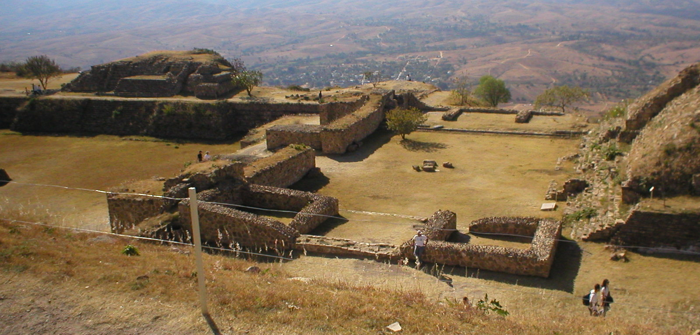

Where I would start
The historic center
Within the city center of Oaxaca de Juárez, it's possible to walk around the streets, plazas, churches, museums and markets. I would prefer to explore and take in the scene rather than just snap a photo.
Monte Albán
Monte Albán is an archaeological site on top of the Oaxaca Valley. The terraces, plazas and structures are a clear indicator of the history of the region extending back many years.

This is an adaptation of a photo by Adrian Sampson under CC BY 2.0.
Markets and workshops
Markets and workshops are more than just places to shop. They relate food, textiles, pottery and wood carving to the people who still practice these crafts.